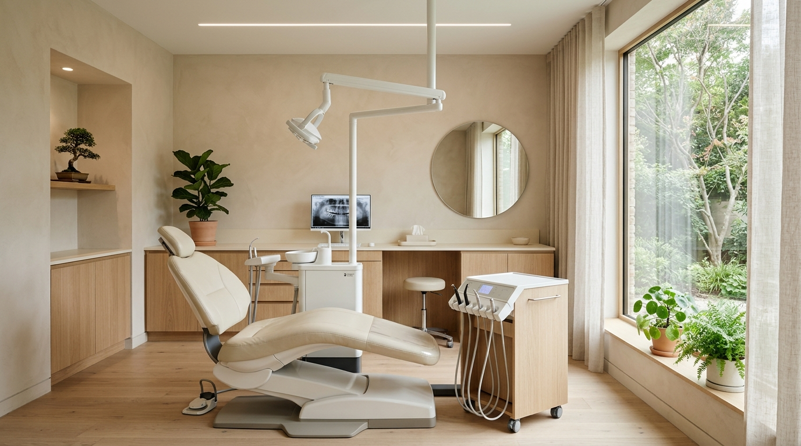
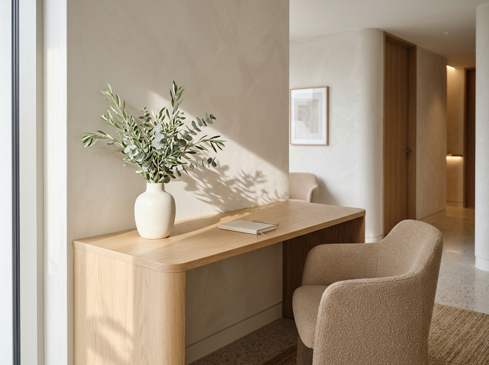

Avaliação odontológica
Análise da saúde bucal para orientar os cuidados necessários.
Explore uma apresentação de serviços odontológicos e veja como funcionaria o contato em um site de clínica.

Exemplos de cuidados odontológicos que podem fazer parte do atendimento em uma clínica.
Análise da saúde bucal para orientar os cuidados necessários.
Cuidados voltados à higiene e à prevenção de problemas bucais.
Tratamentos para recuperar dentes afetados por cáries ou outros danos.
Procedimento para clarear os dentes, indicado após avaliação odontológica.

Nesta página demonstrativa, a Clínica Horizonte Odontologia representa uma proposta de atendimento voltada à saúde bucal e à orientação dos pacientes.
Os dados abaixo são campos demonstrativos e não correspondem a uma clínica real.
Em um site real, este seria o ponto de contato para conversar sobre suas necessidades de saúde bucal.